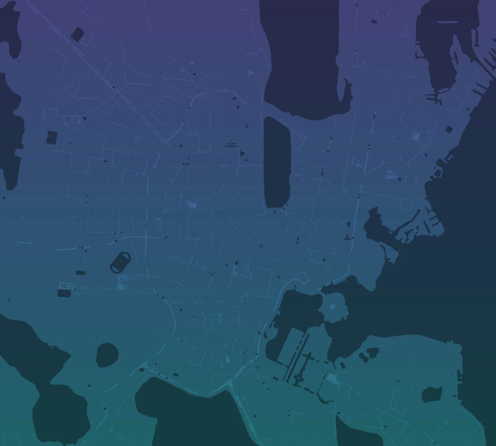
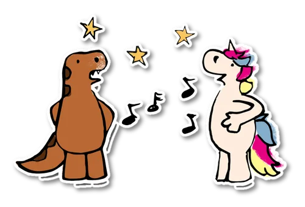

alle23 Türchen
Unter dem Motto „musiKKlub-Feeling in der ganzen Stadt“ erwartet die Schweriner an jedem Abend eine musikalische Überraschung. Wo gespielt wird, steht hier. Wer spielt, verrät das Türchen am Tag selbst, morgens ab 6 Uhr.
Alle 23 Abende in den Kalender eintragen
- 1 Marianas MusikfensterLindenstraße 9 Di 1.12.
- 2 Goethe-GymnasiumJohannes-R.-Becher-Straße 10, vor der Aula Mi 2.12.
- 3 ÄrztehausRahlstedter Straße 29 Do 3.12.
- 4 Karl-Liebknecht-PlatzKarl-Liebknecht-Platz 6 Fr 4.12.
- 5 Mueßer HolzKepler Passage Sa 5.12.
- 6 St. AnnaKlosterstraße 26 So 6.12.
- 7 Stephanus-HofKörnerstraße 7 Mo 7.12.
- 8 KreativkaufhausKlöresgang 5 Di 8.12.
- 9 DemmlerplatzDemmlerplatz 1 Mi 9.12.
- 10 PAUL HolzwerkstattHof der Werderstraße 19a Do 10.12.
- 11 Nachbarschaftstreff WeststadtLessingstraße 26a Fr 11.12.
- 12 Hof Familie ScharfHof in der Bornhövedstraße 58 Sa 12.12.
- 13 Schwerin singtAlter Garten 1 So 13.12.
- 14 Alte Postvor der Alten Post am Berliner Platz 4 Mo 14.12.
- 15 PaulskircheAm Packhof 8 Di 15.12.
- 16 Skatepark LankowRatzeburger Straße 44 Mi 16.12.
- 17 Flotte WeihnachtenWerderstraße 140 Do 17.12.
- 18 Taschengarten MünzstraßeMünzstraße / Fischerstraße Fr 18.12.
- 19 FreilichtmuseumAlte Crivitzer Landstraße 13 Sa 19.12.
- 20 Hotel SpeicherUferpromenade So 20.12.
- 21 DomportalAm Dom Mo 21.12.
- 22 Café LöwenherzObotritenring 245 Di 22.12.
- 23 ZiegenmarktZiegenmarkt 11 Mi 23.12.
quer durchdie Stadt

Karte: © OpenStreetMap-Mitwirkende
so läuftein Abend
- Um 19 Uhr geht es los, nach etwa einer halben Stunde ist Schluss.
- Gespielt wird draußen. Zieh dich warm an.
- Der Eintritt ist frei. Du brauchst keine Karte und keine Anmeldung.
- Mitsingen ist ausdrücklich erwünscht.
